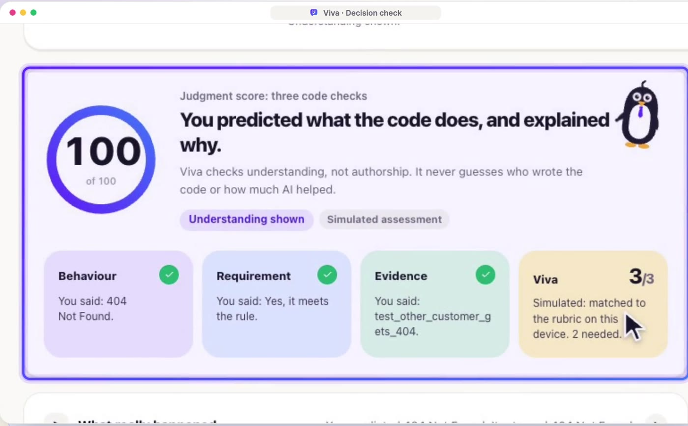

Flying Chinese
Airwallex PS1 · Getting good
AutopilotON
Does it make me a good driver?
Software has an autopilot now.
Does it make me a good developer?
Everyone builds with AI.
84%
Info-Tech Research Group, 2026 · 500+ practitioners
Juniors love the SPEED.
75%
Info-Tech Research Group, 2026 · veterans: 55%
Seniors see the GAP.
16%
BairesDev Dev Barometer, Q2 2026 · 1,569 developers
AI writes it
Juniors ship it
A few seniors check it
Customers run it
81%
of Australian SMEs have adopted AI or automation in finance.
Airwallex × YouGov, Sep 2025 · finance functions · SMEs: 6–249 staff
Juniors
rely heavily on AI. More productive, less growth.
Anthropic RCT, Jan 2026, n = 52 · concept quiz: 50% with AI, 67% by hand
+91%
PR review time on the teams that use AI most. Seniors carry it.
Faros AI, The AI Productivity Paradox, 2025
80%
of executives traced an incident or defect to AI code in the past year.
Sauce Labs 2026 · 400 executives
SMEs need AI’s speed.
→Keep the AI, keep the speed.
Juniors ship more, understand less.
→Make them explain what they ship.
Seniors review more, with less time.
→Send seniors only the real gaps.
AI failures are already common.
→Catch the gap before it merges.
The problem
Juniors stop growing.
They ship with AI, but never build the skill to take the wheel.
From each vendor’s public website and docs, 1 Oct 2026; we did not try the products. — means not offered or not stated.
Keep the autopilot.
Check the driver.
AI does the beginner work now. The new first rung is understanding it.
Viva makes every pull request one practice rep, with someone correcting you.
Anthropic RCT, Jan 2026, n = 52: the biggest gap was debugging; developers who generated code, then asked questions to understand it, kept their learning.
Explaining in your own words (Chi et al., 1989) and being tested (Roediger & Karpicke, 2006) both improve learning.
Introducing
Checks the coder, not the code.
And for the three people inside it.
Uses it
Ship with ChatGPT, Claude, Copilot or Cursor every day.
Reviews it
Usually one or two per team, reviewing everything, often with no separate QA or security team.
Our assumption for this segment, to validate in the pilot
Buys it
Want the speed of AI without shipping code nobody understands.
First market: 5,320 Australian software firms with 5 to 199 staff.
ABS 8165.0, June 2025, ANZSIC 7000 · 1,422 with 20–199 staff, 3,898 with 5–19
How Viva solves it
Triage
The score picks the check
A few quick questions. No viva.
Explain the change in your own words.
The problem today
For companies
Code no one understands ships, and gets found after it breaks.
For seniors
Every change looks the same, so they review all of it or guess.
For juniors
Ship AI code without learning from it. Courses sit apart from the work.
For the industry
Companies require AI, and hire fewer juniors.
What’s the impact?
For companies
Catch code no one understands before it ships, not after it breaks.
For seniors
Review only the changes that need them, with the exact moment to watch.
For juniors
Every PR is a practice rep with correction, not a separate course.
For the industry
Companies keep hiring juniors while still requiring AI.
Technical architecture
Frontend
Plain, no framework

How it’s built
Database
Backend
AI model
Business model & value
What teams pay for today
17%
less understandingwhen AI does the work.
+91%
PR review time on high-AI teamsPaid in senior hours, the scarcest time in a small team.
How Viva earns · B2B
One team. Priced by team size.
Viva turns review cost into growth.
Anthropic RCT, 2026 · Quiz: 50% with AI vs. 67% without AI (n = 52).
Faros AI, The AI Productivity Paradox, 2025 · 10,000+ developers, 1,255 teams.
Now
The full loop, with a live AI follow-up question.
Next 2–4 weeks
Refine the loop and harden it for real teams.
Then 4–6 weeks
Senior minutes per PR, escalation rate, retake pass rate, incidents.
Then 3 months
Conversion, renewal and weekly use.
Later
Beyond code: compliance review and data analysis.
Go to market: one design partner, then one 5–10 developer team, then team by team.
Tony didn’t need less AI.
He needed one question before merge.
Code review checks the code. Viva checks the coder. Pilot it with one of your teams.
Thank you.
Flying Chinese · Airwallex PS1 · Getting good